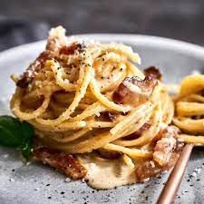

Carbonara

Description
THE original italian Carbonara - no cream , no garlic!
Ingredients
- 100g Guanciale
- 2 egg yolks
- 40g Parmesan cheese
- 40g Pecorino romano cheese
- Salt and freshly cracked Pepper to taste
Instructions
- Chop the Guanciale not too small
- Put it in a pan under low-medium heat
- Cook the pasta in saltwater al dente
- While the Guanciale and the pasta are doing there thing mix the egg yolks with the cheeses, add pepper and slightly salt
- When your pasta is ready and your Guanciale is golden brown, take your pan off the heat and add pasta and 1 cup of pasta water
- Now you have to be very careful not to get scrambled eggs. Add your egg-cheese mixture and stir constantly until you got a silky but sticky sauce around your pasta
- Serve up immediately and enjoy!